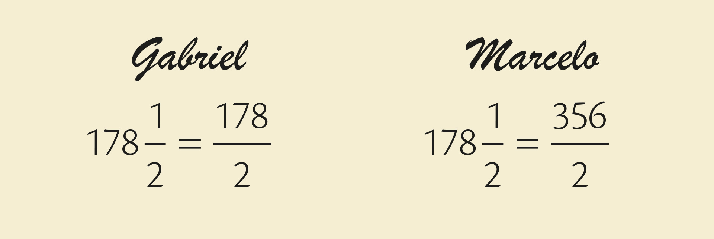
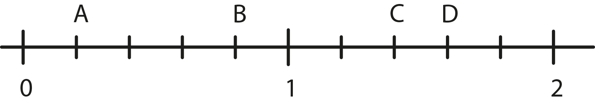

No sítio de Luiz, o pomar ocupa $$\frac{3}{8}$$ e a horta, $$\frac{7}{12}$$ da propriedade. Qual cultura ocupa a maior área do seu sítio? Justifique sua resposta.
Se um pacote com $$1\frac{1}{2}$$ kg de chocolate em pó custa R$ 36,00, quanto deveria custar um pacote com
a) $$\frac{1}{2}$$ kg desse chocolate?
b) 4 kg desse chocolate?
Por que no enunciado a palavra “deveria” foi colocada?
A professora solicitou a seus alunos que escrevessem um número misto a seguir na forma de fração imprópria. Veja como dois alunos fizeram:

a) Algum deles acertou? Explique sua resposta.
b) Como você faria?
Leia as manchetes a seguir e faça o que se pede.
a)
Excesso de peso atinge quase um terço da população mundial
EXCESSO de peso atinge quase um terço da população mundial. Disponível em: <http://www.opovo.com.br/noticias/mundo/dw/2017/06/excesso-de-peso-atinge-quase-um-terco-da-populacao-mundial.html>. Acesso em: 22 fev. 2018.
Pesquise qual é a população mundial atual e determine quantos habitantes, aproximadamente, corresponderiam às pessoas com excesso de peso com base nessa notícia.
b)
Um em cada 10 alunos no Brasil é vítima de bullying
UM EM CADA 10 alunos no Brasil é vítima de bullying. Disponível em: <http://www.leiaja.com/carreiras/2017/04/19/um-em-cada-10-alunos-no-brasil-e-vitima-de-bullying/>. Acesso em: 22 fev. 2018.
Escreva essa informação utilizando uma fração, um número decimal e uma porcentagem.
Observe esta reta numérica:

a) Que frações correspondem a cada um dos pontos B e C?
b) Que números decimais correspondem aos pontos A e D?
c) Imagine um ponto E localizado exatamente no meio da distância entre os pontos C e D. Que fração irredutível corresponderia a esse ponto? E qual número misto?
Você sabe o que significa ouro 18 quilates? Ele é uma mistura do ouro puro (24 quilates) a outros metais mais resistentes, como a pra- ta e o cobre. Essa liga deixa o ouro mais consistente e ideal para a fabricação de joias.